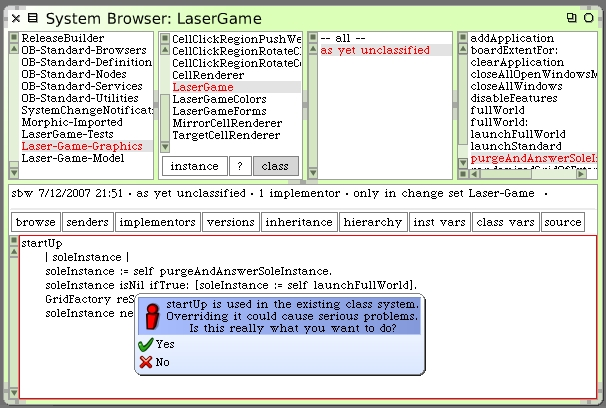

We continue by going back to the class side of LaserGame. Add these methods to assist us with closing any open windows in our develpment image.
closeAllWindows
"LaserGame closeAllWindows"
(SystemWindow windowsIn: World satisfying: [:w | w model canDiscardEdits])
do: [:w | w delete]
closeAllOpenWindowsMessage
^'Do you really want to close all windows?' translated
These methods will come in handy later. Add the following new class method.
disableFeatures
Preferences disable: #warnIfNoSourcesFile.
Preferences disable: #warnIfNoChangesFile.
Preferences disable: #cmdDotEnabled.
Preferences compileHardCodedPref: #cmdGesturesEnabled enable: false.
Preferences compileHardCodedPref: #cmdKeysInText enable: false.
The method will handle details of want we want to do to our image as it becomes the deployment image. Ordinarily when Squeak launches, it checks for the SqueakV39.sources and Squeak.changes files. If Squeak does not find these files it pops up a warning dialog for the developer. We do not want that to happen when we run the deployed image. You also see where we turn off the Command-Period ability.
We will call the #disableFeatures method as we prepare an image for deployment.
Squeak has a built-in mechanism that will notify selected classes that an image has just been launched. There are used internally to handle things like detecting the color-depth of the Display, and the file system variances. We will use it to send a special message to our Laser Game whenever a deployed image is launched. The trick to doing this is to register the class LaserGame to receive the start-up message before we save the deployed image. Add these two class methods to LaserGame.
addApplication
"LaserGame addApplication"
Smalltalk addToStartUpList: LaserGame.
clearApplication
"LaserGame clearApplication"
Smalltalk removeFromStartUpList: LaserGame.
The #addApplication class method will register the LaserGame class with Squeak so that it receives the special #startUp message when the system has launched. The #clearApplication method undoes that registration in case we don't want to keep things that way. This is handy if we are still experimenting with code in our development image.
It can happen that we leave garbage versions of morphs behind which may not have been properly closed or deleted. When we save our image for deployment we want a way to clean up any extra LaserGame morphs that may inadvertently have been left behind. We can then answer what should be the sole instance of the LaserGame morph in our deployed image for later direct operations. Add the following new class method on LaserGame.
purgeAndAnswerSoleInstance
"LaserGame purgeAndAnswerSoleInstance"
| coll result |
coll := self allInstances.
coll size > 1 ifTrue: [2 to: coll size do: [:index |
| morph |
morph := coll at: index.
morph delete]].
result := coll isEmpty
ifTrue: [nil]
ifFalse: [coll first].
^result
We're now ready to add the #startUp class method to LaserGame.
startUp
| soleInstance |
soleInstance := self purgeAndAnswerSoleInstance.
soleInstance isNil ifTrue: [soleInstance := self launchFullWorld].
GridFactory reSeed.
soleInstance newGame.
When you "compile" this new method, by saving it, Squeak will issue the following warning.
Click "Yes" and let it compile. The #startUp method will be performed once when an image is launched provided that the LaserGame class was registered for notification. With this method we will grab the single instance of our LaserGame morph that will be saved open in our deployed image. If it does not find an image, it launches a fresh one. We then re-seed the random number generator in our Grid Factory. The last step is to have the open Laser Game morph start a "new game". This should make every launch of our deployed Squeak application have a unique game starting condition.